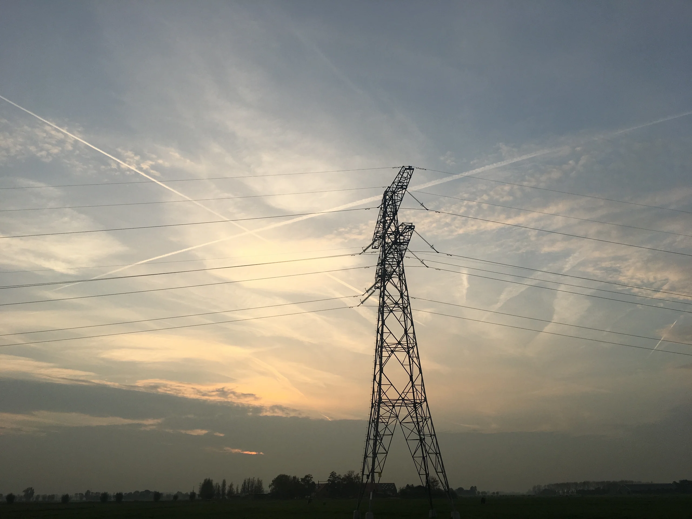

输电铁塔夕阳 · 背景照片署名

原图：Pylon at sunset Midden Delftland NL 2017.jpg
作者：Edmund Vermeulen
许可：CC BY-SA 2.0。此照片的网页衍生版本保留该许可。
处理：从4032×3024真实原图下载，应用EXIF方向及必要的sRGB色彩转换，保留完整横向构图，不放大；以LANCZOS下采样为2560×1920，输出WebP质量86。未使用AI生成，未添加标志。页面可叠加淡色/玻璃遮罩作为装饰。
地点与用途：来源说明为荷兰Midden Delftland的150kV输电铁塔夕阳照片，仅作电网主题氛围装饰，不代表中国或国家电网所属设施，也不提供招聘数据依据。